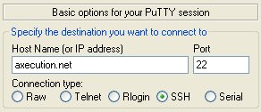
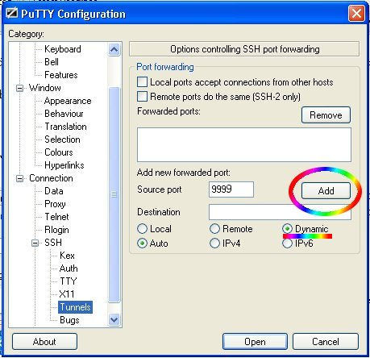
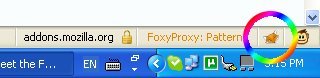
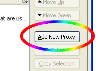
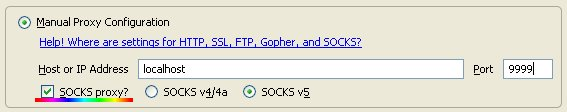
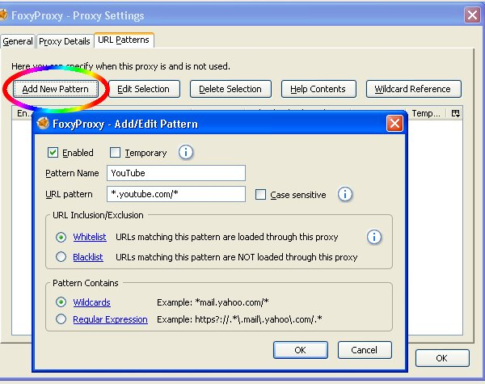

|  In the main screen for PuTTY Tray type axecution.net for the Host Name. Port should be 22, but don't click open yet. You need to configure an SSH tunnel first (this will let you use the proxy). Type a name under saved sessions and click save if you want to use it later on. |
|

First go to the Connection category and bring up SSH then click on
"Tunnels" (secret tunnel lopl). In "Source port" enter 9999 and click
"Dynamic" under destination, then click add. You can then go back to the
session category and click "Open" in the lower right. Type in the user name and password on the flyer (sorry, but we have limited bandwidth right now so not everybody can use axecution!). If you can find another system to connect to with SSH though these same instructions will work. When you type in your password it will look like nothing is being typed in, so just keep typing it. In order for this to work with YouTube the server would needs to be in a different country. |
|  Now lets move on to FoxyProxy. Once it is installed and FireFox has been reset there will be a fox icon in the lower right hand corner, click on that to bring up the FoxyProxy options. |
|  Click the add new button to add axecution to your proxy list. |
|  Under Proxy Details set the Host or IP Address to "localhost" and the port to 9999, and check the "SOCKS proxy?" option. |
|  Click over to URL Patterns and click on Add New Pattern. Name the new pattern "YouTube." This pattern will make it so you will only use the proxy while going to youtube. The URL pattern is "*.youtube.com/*" Make sure the enable check mark is checked. Click OK. |